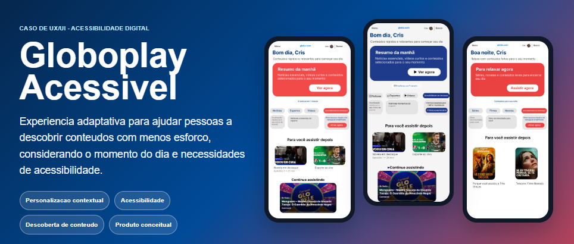

Front-End | UX/UI | Produto Digital | Customer Experience Tech
Cristina Meirelles
Transformando experiência com clientes, processos e dados em soluções digitais.
Profissional em transição para tecnologia, com formação em Marketing e cursando Análise e Desenvolvimento de Sistemas. Uno experiência prática em Customer Experience, indicadores, automação de processos e desenvolvimento web para criar soluções digitais mais eficientes, acessíveis e centradas nas pessoas.
Resultados e repertório
Sinais rápidos para recrutadores
Sobre mim
Uma transição construída sobre negócio, cliente e tecnologia
Minha trajetória começou em Marketing e ganhou profundidade na operação de Atendimento Digital e Customer Experience, onde aprendi a lidar com clientes, indicadores, processos, comunicação entre áreas e melhoria contínua. Essa base me deu uma visão prática sobre como tecnologia precisa resolver problemas reais, reduzir esforço operacional e melhorar experiências.
Hoje curso Análise e Desenvolvimento de Sistemas e venho direcionando minha carreira para Desenvolvimento Web, Front-End, UX/UI e Produto Digital. Meu diferencial está em unir repertório de negócio, escuta ativa, análise de dados e construção de interfaces para pensar soluções completas: da dor do usuário à implementação.
Busco oportunidades em tecnologia onde eu possa aprender rápido, colaborar com times multidisciplinares e contribuir com organização, senso analítico e foco em resultado.
Base
Marketing e visão de negócio
Entendimento de posicionamento, comunicação, jornada e valor para o cliente.
Experiência
Customer Experience e processos
Atendimento digital, KPIs, relacionamento, melhoria contínua e resolução de problemas.
Tecnologia
ADS, Front-End, UX/UI e dados
HTML, CSS, JavaScript, Git, GitHub, Figma, Power BI, SQL e automação.
Competências
Um perfil técnico com repertório de operação e produto
Desenvolvimento
- HTML semântico
- CSS responsivo
- JavaScript
- Git e GitHub
UX/UI
- Figma
- Wireframes
- Protótipos
- Acessibilidade
Dados
- Excel
- Power BI
- SQL
- Indicadores e KPIs
Ferramentas
- Zendesk
- Intercom
- Teams
- Slack
Experiência profissional
Experiência real em operação, indicadores e automação
Customer Experience
Atendimento digital orientado por dados e melhoria contínua
Atuação com relacionamento com clientes, análise de indicadores, organização de demandas e comunicação entre áreas para resolver problemas com clareza e agilidade.
- Atendimento digital em alto volume
- Acompanhamento de KPIs e padrões de demanda
- Resolução de problemas e priorização
- Melhoria de processos e comunicação operacional
Automação de Atendimento
Migração Zendesk para Intercom com fluxos automatizados e IA
Participação na criação e configuração de automações durante a migração de plataforma, conectando regras de atendimento, inteligência artificial e organização de processos para reduzir esforço operacional.
- Configuração de bots e fluxos inteligentes
- Automação de atendimento e roteamento de clientes
- Identificação de vendedores e criação de macros
- IA aplicada ao suporte e padronização de processos
Projetos selecionados
Cases que conectam UX, front-end, acessibilidade e impacto real
Projetos de UX/UI
Estudos com foco em pesquisa, jornada, acessibilidade e solução digital.

Projeto de UX/UI
Globoplay Acessível
Case de UX/UI focado em acessibilidade digital, personalização contextual e redução da carga cognitiva em uma experiência de streaming.
Projetos para Clientes
Trabalhos reais com entrega publicada, objetivo de negócio e experiência digital.

Projeto para Cliente Real
A Vida Como Ela É
Landing page institucional desenvolvida para cliente real, com foco em informação, acolhimento e contato para uma iniciativa sobre endometriose.
Diferenciais
Por que meu perfil é diferente?
Visão de negócio
Formação em Marketing e repertório para conectar solução, posicionamento e valor para o usuário.
Experiência com clientes
Vivência direta com dores reais, relacionamento, comunicação e resolução de problemas em CX.
Processos e automação
Experiência prática com Zendesk, Intercom, bots, IA, macros, fluxos e melhoria contínua.
Dados para decidir
Familiaridade com KPIs, Excel, Power BI, SQL e análise de dados para orientar prioridades.
UX aplicado
Capacidade de pensar jornada, acessibilidade, clareza de interface e experiência digital.
Comunicação entre áreas
Perfil colaborativo para conversar com negócio, atendimento, produto e tecnologia.
Em busca de oportunidade
Preparada para contribuir em times de tecnologia, produto e experiência digital
Busco uma oportunidade na área de tecnologia onde eu possa unir minha experiência em Customer Experience, processos e negócios aos conhecimentos em desenvolvimento web, UX/UI, automação e soluções digitais.
Tenho facilidade de aprendizado, visão analítica e compromisso em criar experiências melhores para usuários, clientes e empresas.
Falar comigoContato
Vamos conversar sobre tecnologia, produto e experiência digital
Recrutadores e lideranças de tecnologia: estou disponível para entrevistas, processos seletivos e conversas sobre oportunidades em Front-End, UX/UI, Produto Digital, Customer Experience Tech, Processos e vagas júnior em tecnologia.